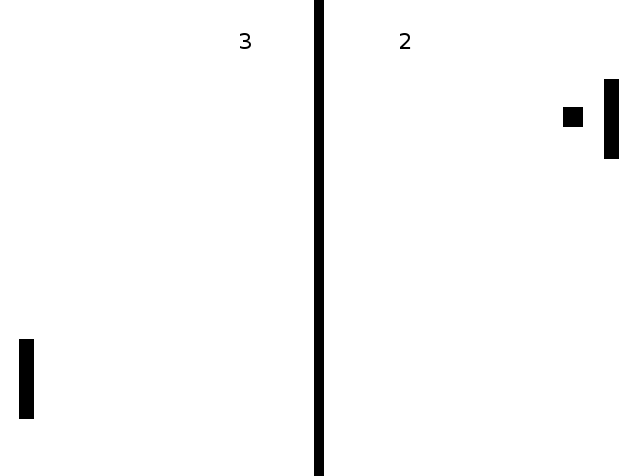
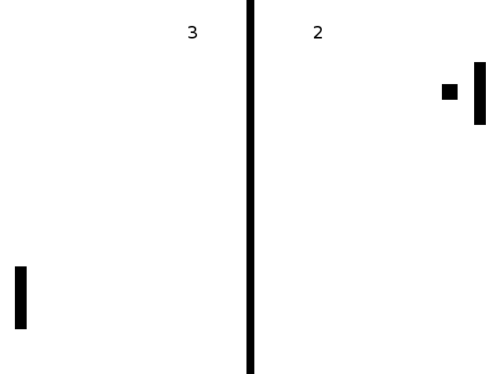

Etyllic Pong
This is a Pong Clone using Etyllica.
Having trouble with Pages? Check out the documentation at http://help.github.com/pages or contact support@github.com and we’ll help you sort it out.
This is a Pong Clone using Etyllica.
Having trouble with Pages? Check out the documentation at http://help.github.com/pages or contact support@github.com and we’ll help you sort it out.